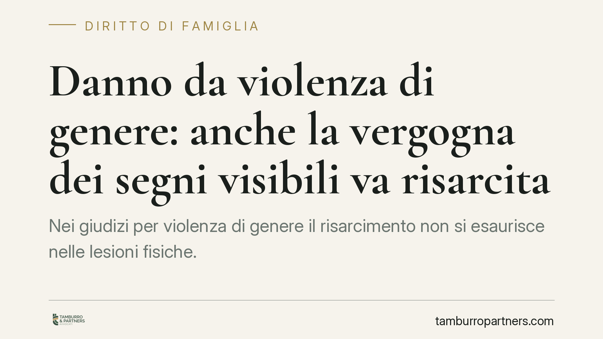

Danno da violenza di genere: anche la vergogna dei segni visibili va risarcita
Nei giudizi per violenza di genere il risarcimento non si esaurisce nelle lesioni fisiche. Oltre al danno biologico può rilevare anche la frustrazione e l'imbarazzo provati dalla vittima nel mostrare segni socialmente riconoscibili dell'aggressione. È una voce che va allegata e provata in modo specifico: capire come inquadrarla incide concretamente sulla quantificazione del ristoro.

Il principio e il quadro di riferimento
Il tema torna al centro del dibattito: nei danni da violenza di genere la sofferenza non si misura solo in giorni di prognosi. Accanto al danno biologico in senso stretto può assumere rilievo autonomo il disagio relazionale e sociale legato alla visibilità delle lesioni: il turbamento di dover esibire lividi, ematomi o cicatrici in contesti quotidiani — il lavoro, la scuola dei figli, la vita di relazione.
Un'avvertenza di metodo. Quando una pronuncia non è richiamata con numero e anno, il lettore non può verificarla né citarla: trattiamo quindi la questione come principio di sistema, ricostruibile a partire dalla disciplina del danno non patrimoniale. Chi intenda far valere questa voce in giudizio chieda al proprio difensore gli estremi esatti della decisione più aderente al caso concreto.
Inquadramento normativo
Il riferimento cardine è l'articolo 2059 del codice civile, che consente il risarcimento del danno non patrimoniale nei casi previsti dalla legge. Nelle condotte di violenza di genere — lesioni personali, maltrattamenti ex art. 572 c.p., atti persecutori ex art. 612-bis c.p. — ricorre un reato, e quindi il titolo legale pieno per il risarcimento del danno non patrimoniale.
La struttura di questo danno è definita dalle Sezioni Unite della Cassazione con le note sentenze di San Martino (nn. 26972, 26973, 26974 e 26975 dell'11 novembre 2008). Il danno non patrimoniale è categoria unitaria, ma al suo interno si distinguono profili risarcibili: il danno biologico (la lesione psico-fisica accertata in sede medico-legale), il danno morale (la sofferenza interiore, il patema) e il profilo dinamico-relazionale (lo stravolgimento delle abitudini e dei rapporti sociali).
La vergogna nel mostrare i segni visibili dell'aggressione si colloca proprio in questa terza area: non è un capitolo a sé che si somma meccanicamente, ma un aspetto della sofferenza che incide sulla dimensione relazionale della persona. Le stesse Sezioni Unite vietano la duplicazione risarcitoria: non si possono liquidare due volte, sotto etichette diverse, i medesimi pregiudizi. L'imbarazzo sociale rileva quindi se e nella misura in cui aggiunge un pregiudizio ulteriore e distinto rispetto a quello già coperto dalle altre voci.
Implicazioni pratiche
Per la vittima il punto operativo è l'onere di allegazione e prova. Affermare genericamente di aver sofferto non basta: occorre descrivere in concreto in che modo i segni visibili abbiano inciso sulla vita di relazione — assenze dal lavoro, isolamento, rinuncia a contesti sociali, disagio documentabile.
Il secondo nodo è la scelta della sede. La vittima può costituirsi parte civile nel processo penale, ottenendo che il risarcimento sia deciso dallo stesso giudice che accerta il reato; in alternativa può agire con un'autonoma azione civile. La prima strada sfrutta l'istruttoria penale; la seconda offre più spazio probatorio sul quantum ma segue tempi propri.
Terzo profilo: i termini. L'azione di risarcimento da fatto illecito si prescrive in cinque anni (art. 2947 c.c.). Quando il fatto è anche reato e per quel reato la legge prevede un termine di prescrizione più lungo, quest'ultimo si applica anche all'azione civile (art. 2947, comma 3, c.c.). Per i reati di violenza di genere, spesso puniti severamente, il termine utile può dunque risultare superiore ai cinque anni ordinari: una verifica caso per caso è indispensabile.
Cosa fare in concreto
- Documenta i segni visibili. Conserva referti, fotografie datate delle lesioni e certificati medici: sono la base sia del danno biologico sia del profilo relazionale.
- Ricostruisci l'impatto sociale. Annota assenze dal lavoro, rinunce, cambiamenti nelle abitudini; raccogli eventuali testimonianze di chi ha osservato il disagio.
- Valuta la sede con il difensore. Decidi tra costituzione di parte civile e azione civile autonoma in base a prove disponibili e tempi del procedimento.
- Verifica i termini di prescrizione. Controlla se al reato contestato si applica un termine penale più lungo di quello civile quinquennale prima che decorra.
- Allega le voci in modo distinto. Chiedi che il danno relazionale legato alla visibilità delle lesioni sia descritto e provato in modo specifico, senza sovrapposizioni con le altre componenti.
Disclaimer
Contributo informativo a cura di Tamburro & Partners - Avv. Giuseppe Tamburro. Non costituisce parere legale.
Ogni famiglia ha il suo equilibrio.
Separazione, divorzio, affidamento, assegno: se vuoi un confronto riservato su una specifica situazione, scrivi allo studio. Ti rispondiamo entro un giorno lavorativo.